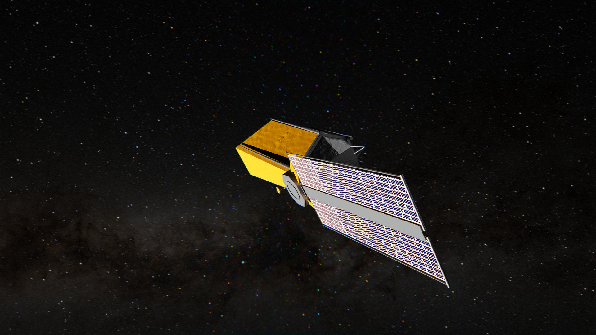

About
I graduated from the Magistère de Physique Fondamentale d'Orsay (Master's degree in Fundamental Physics) and am certified to teach Physics and Chemistry (with a focus on Physics). I completed my education with a Master's degree in Astrophysics. I am currently working on my thesis at LIRA (Paris Observatory), where my research focuses on the development of direct imaging of exoplanets for the coronagraphic instrument of the future Roman Space Telescope.

I began my adventure at Paris Observatory with my master's internship, studying Coherence Differential Imaging (CDI) for direct imaging of exoplanets at LIRA. The goal of the internship was to implement and study the CDI technique using codes developed by a LIRA team, in order to optimize it on data from numerical simulations of the VLT/SPHERE instrument and on an optical bench from Meudon: the THD2. This work aims to pave the way for a novel and innovative strategy to be deployed for the next survey of giant exoplanets by direct imaging with SPHERE+.

I am pursuing a PhD at Paris Observatory (2025–2028) working with Johan Mazoyer and Axel Potier on direct imaging with the Roman Space Telescope. The core objective of my thesis is to study and optimize innovative techniques, such as active correction (dark hole) and post-processing correction (Coherence Differential Imaging), applied to the Roman Space Telescope's coronagraph through numerical simulations and laboratory tests on the THD2 test bench. I work closely with several international teams on this project. This telescope will serve as a critical technology demonstrator for the future Habitable Worlds Observatory mission, which ultimately aims to image planets similar to our own Earth.

.gif)
Curriculum Vitae
You can read my CV below or download the PDF version.